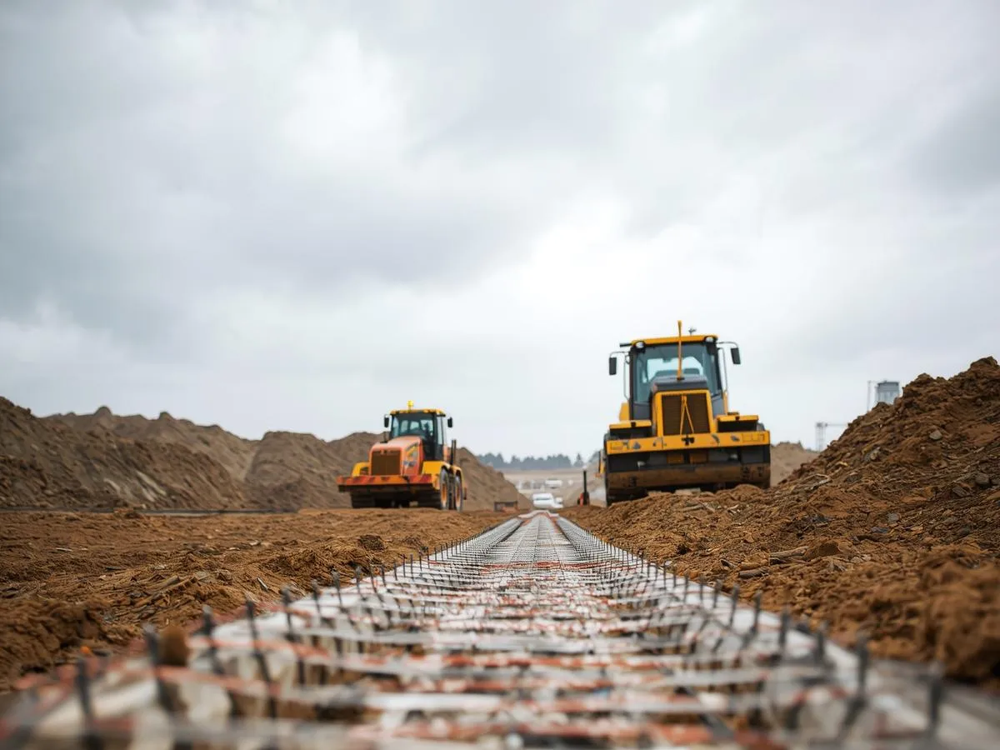

Jak przygotować teren pod budowę domu – kluczowe etapy robót ziemnych
Od badań gruntu i wytyczenia ław fundamentowych, przez korytowanie i zabezpieczenie wykopów, aż po zagęszczenie podbudowy. Sprawdź listę kontroli, która ułatwia rozmowę z wykonawcą i inspektorem nadzoru.
CZYTAJ WIĘCEJ